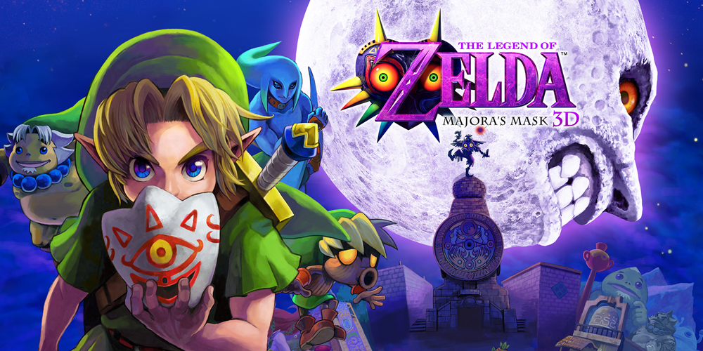

3DS :
Description :

La Nintendo 3DS est une console portable de huitième génération développée par Nintendo,
ayant pour particularité un affichage en 3D autostéréoscopique (sans lunettes).
La Nintendo 3DS succède à la Nintendo DS, et est rétrocompatible avec les logiciels de cette dernière.
Malgrès un faux départ,
une baisse des prix, quelques nouveaux jeux et des excuses plus tard , ses ventes explosent.
Jeux :
Le 17 septembre 2020, Nintendo annonce la fin de production de toutes les consoles de la famille 3DS.
(cette image est un lien)
Retour à la première page WiiU